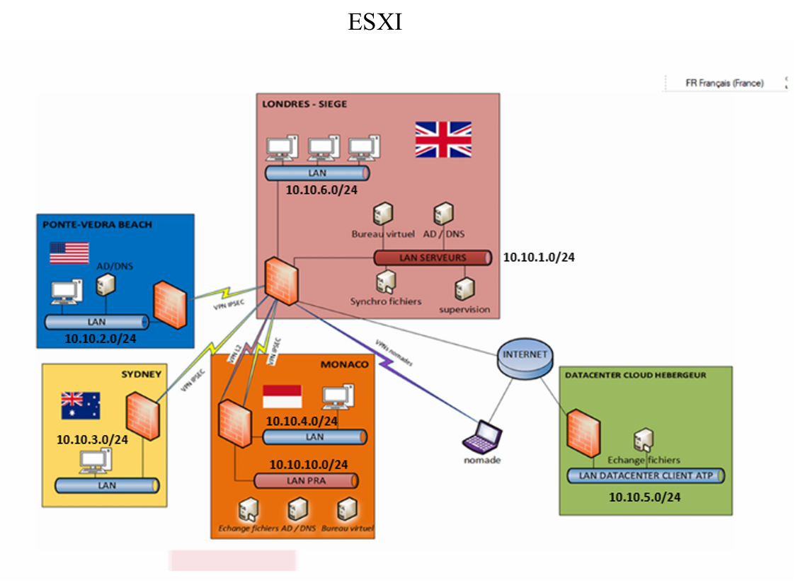
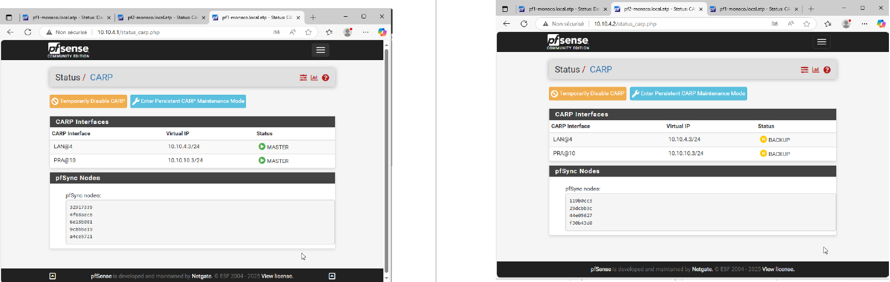
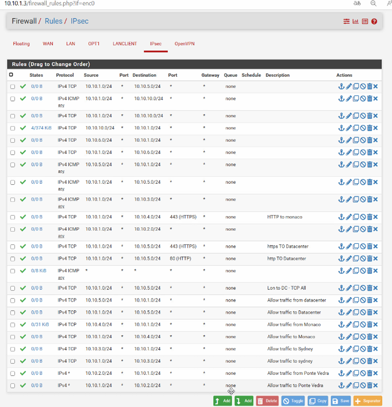
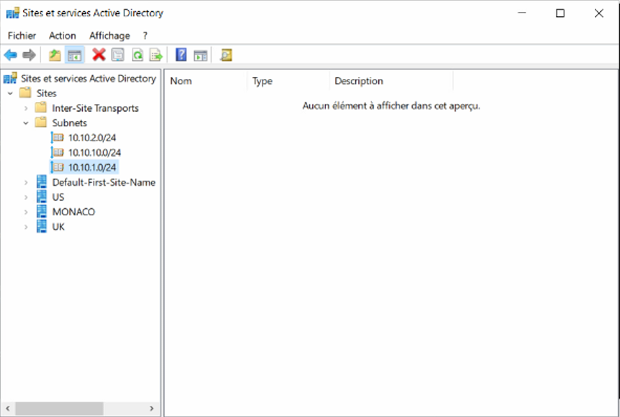
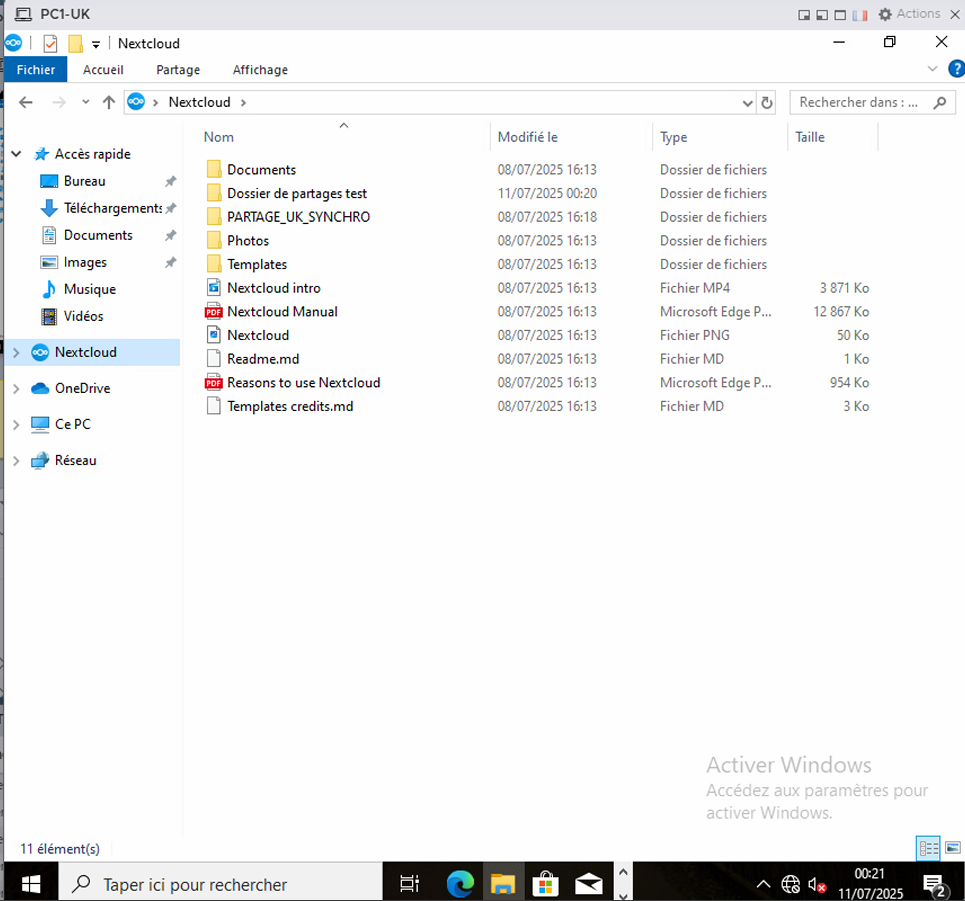
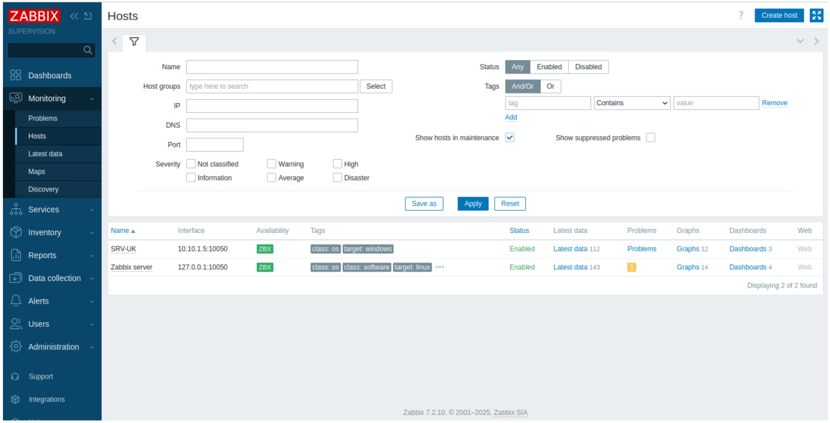
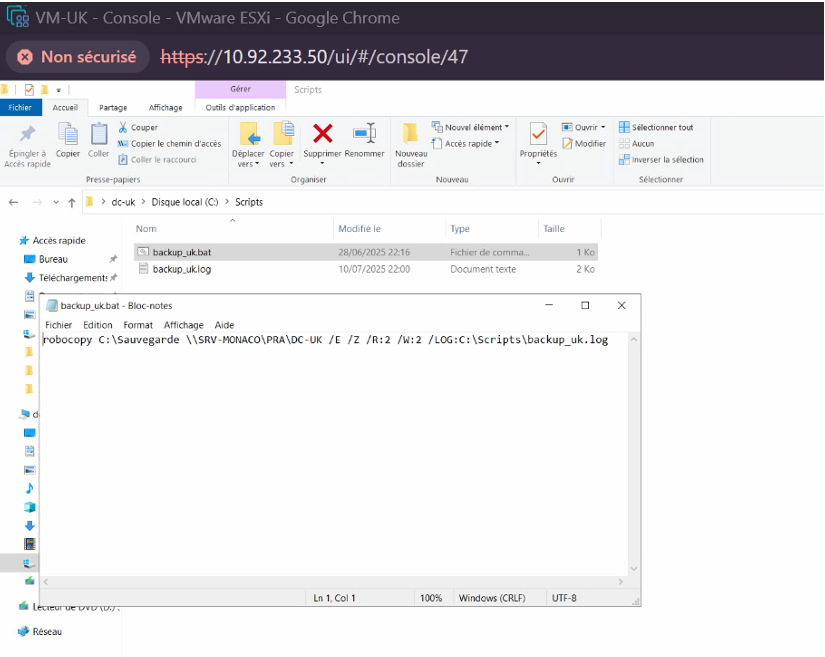

Conception et intégration d'une infrastructure multi-sites pour l'Association of Tennis Professionals (ATP). Virtualisation VMware ESXi, pare-feux pfSense en Haute Disponibilité, PRA/PCA à Monaco, et gestion de la mobilité sécurisée.
L'organisation de l'ATP rencontrait des défis majeurs dans la gestion de son SI réparti entre son siège de Londres et ses bureaux à Ponte Vedra (US), Sydney et Monaco. L'objectif de ce projet MSPR était de centraliser les ressources critiques, d'assurer une haute disponibilité et de garantir un accès sécurisé aux nombreux salariés nomades.
L'infrastructure repose sur 5 sites logiques interconnectés. Chaque site dispose de son propre adressage IP (LAN, WAN, SYNC pour la haute disponibilité, et PRA pour Monaco). Le Datacenter centralise les échanges de fichiers.

La sécurité périmétrique de chaque site est assurée par une solution pfSense. Pour garantir une résilience totale, un cluster de pare-feux (Master / Backup) a été mis en place sur les sites critiques.


Pour répondre aux besoins métiers de l'ATP, nous avons déployé un ensemble de services Windows et Linux, en veillant toujours à la redondance de l'information.



L'anticipation des pannes est au cœur de ce projet. Outre la redondance des pare-feux et des serveurs AD, un PRA complet a été documenté et scripté pour le site de Monaco.


En conclusion du projet, nous avons proposé au bureau exécutif de l'ATP une feuille de route pour externaliser l'infrastructure vers le Cloud à moyen terme.
Ce projet démontre ma capacité à concevoir, déployer et maintenir des infrastructures complexes.